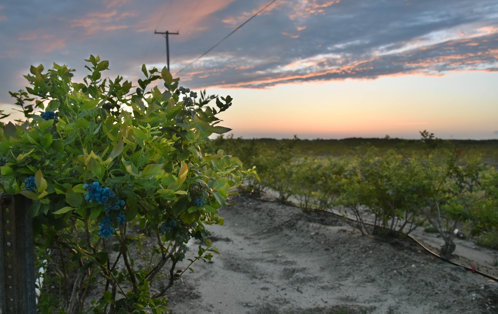

Six target industries were identified in the 2015 Atlantic County Economic Development Strategy and Action Plan as having the most opportunities to attract and grow businesses and promote economic diversification.
Atlantic County embraces twenty-first century technologies to help keep pace with an ever-changing economy. Egg Harbor Township is home to the Federal Aviation Administration’s William J. Hughes Technical Center campus, adjacent to the Atlantic City International Airport.
Situated on 58 acres on the campus of the Technical Center is the Stockton Aviation Research & Technology Park. The facility is expected to generate research and advance aviation sciences with the development of 400,000 square feet of office space to attract commercial, government and academic organizations. Development at the site is subject to FAA approval.
Life Sciences includes two strong components for Atlantic County: (1) understanding and improving the health of residents, and (2) sustaining the ecosystem within the region.
Healthcare is a major industry in Atlantic County. AtlantiCare is southeast New Jersey’s largest health care provider, delivering cutting-edge technologies and top-notch service.
The AtlantiCare Medical Center was recognized with a 2009 Baldrige Award, one of just five organizations in the entire nation to be honored for innovation and performance excellence. Shore Medical Center was one of three hospitals nationwide to receive a Gold Seal of Approval for healthcare quality by the Joint Commission for Lumbar and Cervical Spine Surgery. It is nearing the completion of a $125 million expansion that will include a new surgical pavilion, medical office building, entrance and lobby. It recently opened a $1.8 million Pediatric Care Center, the only one of its kind in New Jersey which features a separate pediatric emergency treatment area combined with long-term, inpatient treatment rooms.
With eight Atlantic City casinos, world-class restaurants and entertainment, beautiful boardwalks and beaches, scenic parks and recreation amenities, preserved wildlife areas, vibrant arts, history and culture, and growing agritourism and eco-tourism interest, Atlantic County’s tourism sector remains a leading industry and source of employment. Atlantic County attracts millions of annual visitors and accounted for nearly 18 percent of the nearly $40 billion in statewide tourism-related revenues in 2014.
Due largely to the presence of Atlantic City's casinos, leisure and hospitality accounts for the largest number of jobs in the county with a total of 46,156 jobs or 41.7% of the total employment in 2011, according to the NJ Department of Labor, based on 12 operating casino hotels within the Tourism District of Atlantic City. Total gross revenues from 2012 were reported at $3.052 billion. Click Here for more information on casinos in Atlantic County. Experience world class shopping at various retail centers throughout Atlantic County. Located in the center of Atlantic City is Tanger Outlets, The Walk, comprised of approximately 100 outlet stores and the newest addition Bass Pro Shops. Hamilton Mall and Wrangleboro Consumer Square in Mays Landing are home to many big name retailers including Target, Macy's, and Kohl's as well as many smaller stores and eateries. For more information on shopping in Atlantic County click here.
Specialty manufacturing provides value added products for the existing agricultural industry as well as the life sciences and aerospace and aviation target industries. Agriculture is a prominent industry in Atlantic County with a wide spectrum of focus ranging from vegetable hydroponics to shellfish aquaculture. Specialty manufacturing in this sector relates to farm-to-table production. Medical manufacturing provides a synergistic component in the life sciences industry supply chain. Hospitals require medical apparatuses, test kits, and surgical supplies. Future growth in medical research may be increasing appealing to pharmaceutical manufactures.
Current entrepreneurial companies provide one of the highest average annual wages in the region second only to aeronautics and aviation. More than 6,000 people in Atlantic County currently earn their livings based on the innovation of hardworking, successful small business concerns.
New Jersey is the Garden State and agriculture remains a prominent industry in Atlantic County. The Town of Hammonton is proudly proclaimed as the “Blueberry Capital of the World.” The growth of farm-to-table options complements our area’s world class dining and entertainment venues. And our locally grown grains and outstanding water quality provide farm-to-tap options and benefit our award-winning wineries, breweries and distilleries. Food processing and warehousing opportunities with access to major metropolitan markets also contribute to this industry.
